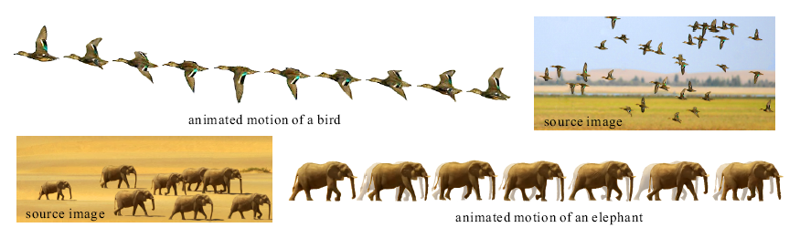

| SIGGRAPHASIA2008 |
|
Animating Animal Motion from Still |
|
Xuemiao Xu Liang Wan Xiaopei Liu Tien-Tsin Wong Liansheng Wang Chi-Sing Leung |
|
ACM Transactions on Graphics (SIGGRAPH Asia 2008 issue), Vol. 27, No. 5, December 2008, pp. 117:1-117:8. |
|  |
|
Abstract Even though the temporal information is lost, a still picture of moving animals hints at their motion. In this paper, we infer motion cycle of animals from the "motion snapshots" (snapshots of different individuals) captured in a still picture. By finding the motion path in the graph connecting motion snapshots, we can infer the order of motion snapshots with respect to time, and hence the motion cycle. Both "half-cycle" and "full-cycle" motions can be inferred in a unified manner. Therefore, we can animate a still picture of a moving animal group by morphing among the ordered snapshots. By refining the pose, morphology, and appearance consistencies, smooth and realistic animal motion can be synthesized. Our results demonstrate the applicability of the proposed method to a wide range of species, including birds, fishes, mammals, and reptiles. |
Paper (PDF, 8.95M) |
|||
| Press | ||||
|
Video
(AVI, 26.6M) |
||||
|
BibTex:
@article{xu-2008-animating,
|
Move Elephants | |||
| Move Tortoise | ||||
| Move Loaches | ||||
| Birds Fly I | ||||
| Birds Fly II |